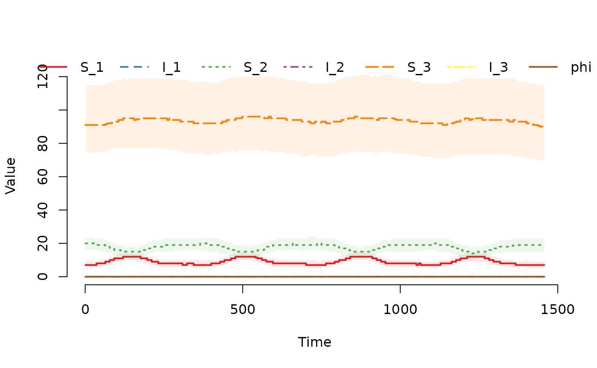
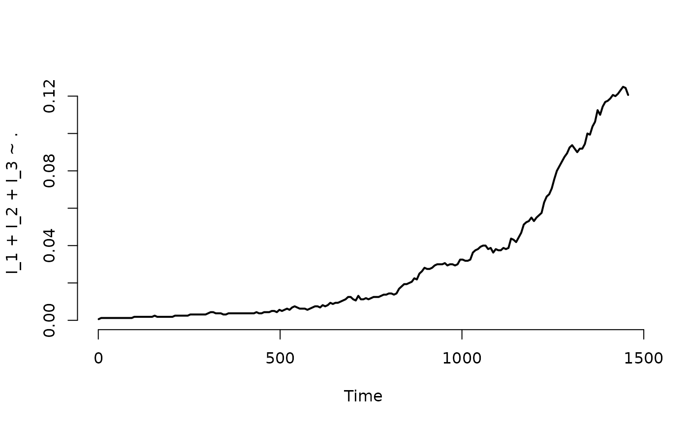
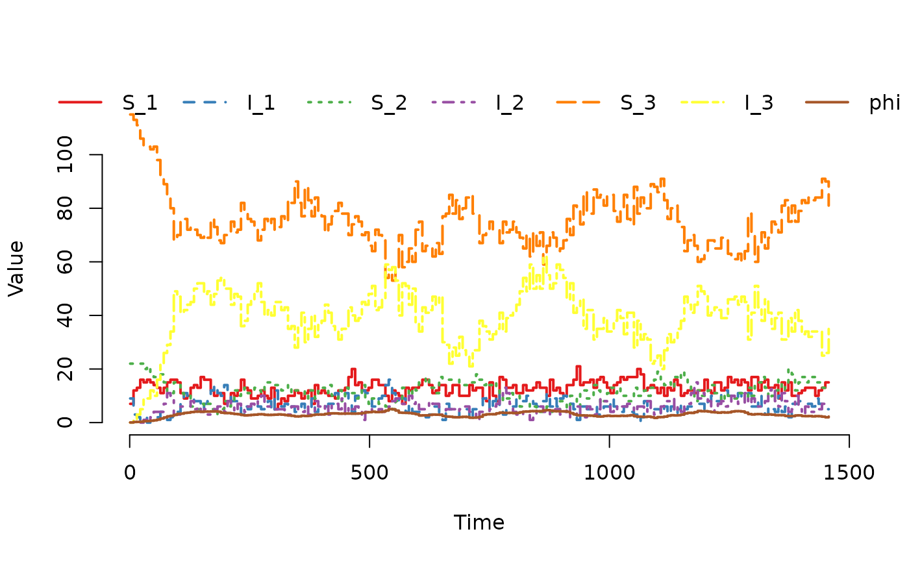

Dataset containing 783,773 scheduled events for a population of 1,600 cattle herds stratified by age over 1,460 days (4 years). Demonstrates how demographic, movement, and age-transition events affect SISe3 dynamics in a cattle disease context.
Usage
data(events_SISe3)Details
This dataset contains four types of scheduled events that affect cattle herds (nodes) with age structure:
- Exit
Deaths or removal of cattle from a herd (n = 182,535). These events remove cattle from susceptible or infected compartments across age categories.
- Enter
Births or introduction of cattle to a herd (n = 182,685). These events add susceptible cattle, typically to the youngest age category.
- Internal transfer
Age transitions or within-herd movements (n = 317,081). These events move cattle between age categories within a herd, reflecting maturation and changing infection risk with age.
- External transfer
Movement of cattle between herds (n = 101,472). These events transfer cattle from one herd to another across age categories, potentially introducing infected animals.
The select column in the returned data frame is mapped to
the columns of the internal select matrix as follows:
select = 1: Targets S_1 (Susceptible, age 1).select = 2: Targets S_2 (Susceptible, age 2).select = 3: Targets S_3 (Susceptible, age 3).select = 4: Targets S_1 and I_1 (Susceptible and Infected, age 1).select = 5: Targets S_2 and I_2 (Susceptible and Infected, age 2).select = 6: Targets S_3 and I_3 (Susceptible and Infected, age 3).
The shift column is used for Internal transfer events
to define the destination compartment. It corresponds to the column
index in the internal N matrix that specifies the transition
(e.g., moving from age 1 to age 2).
Events are distributed across all 1,600 herds over the 4-year period, reflecting realistic patterns of cattle demographic change, herd-to-herd movement, and age progression in a livestock production system. The higher event count compared to non-age-structured models reflects the addition of internal transfer events for age category transitions.
The data contains:
- event
Event type: "exit", "enter", "intTrans", or "extTrans".
- time
Day when event occurs (1-1460).
- node
Affected herd identifier (1-1600).
- dest
Destination herd for external transfer events, else 0.
- n
Number of cattle affected.
- select
Model compartment to affect (see
SimInf_events).- proportion
0. Not used in this example.
- shift
Determines how individuals in internal transfer events are shifted to enter another compartment.
See also
u0_SISe3 for the corresponding initial cattle
population with age structure, SISe3 for creating
SISe3 models with these events and
SimInf_events for event structure details
Examples
## For reproducibility, call the set.seed() function and specify the
## number of threads to use. To use all available threads, remove the
## set_num_threads() call.
set.seed(123)
set_num_threads(1)
## Create an 'SISe3' model with 1600 cattle herds (nodes) stratified
## by age, initialize it to run over 4*365 days and record data at
## weekly time-points. Add ten infected animals to age category 1 in
## the first herd to seed the outbreak. Define 'tspan' to record the
## state of the system at weekly time-points. Load scheduled events
## events for the population of nodes with births, deaths and
## between-node movements of individuals.
u0 <- u0_SISe3
u0$I_1[1] <- 10
model <- SISe3(u0 = u0,
tspan = seq(from = 1, to = 4*365, by = 7),
events = events_SISe3,
phi = rep(0, nrow(u0)),
upsilon_1 = 1.8e-2,
upsilon_2 = 1.8e-2,
upsilon_3 = 1.8e-2,
gamma_1 = 0.1,
gamma_2 = 0.1,
gamma_3 = 0.1,
alpha = 1,
beta_t1 = 1.0e-1,
beta_t2 = 1.0e-1,
beta_t3 = 1.25e-1,
beta_t4 = 1.25e-1,
end_t1 = 91,
end_t2 = 182,
end_t3 = 273,
end_t4 = 365,
epsilon = 0)
## Display the number of cattle affected by each event type per day.
plot(events(model))
## Run the model to generate a single stochastic trajectory.
result <- run(model)
## Plot the median and interquartile range of the number of
## susceptible and infected individuals.
plot(result)

## Plot the proportion of nodes with at least one infected individual.
plot(result, I_1 + I_2 + I_3 ~ ., level = 2, type = "l")

## Plot the trajectory for the first herd.
plot(result, index = 1)

## Summarize the trajectory. The summary includes the number of events
## by event type.
summary(result)
#> Model: SISe3
#> Number of nodes: 1600
#>
#> Transitions
#> -----------
#> S_1 -> upsilon_1*phi*S_1 -> I_1
#> I_1 -> gamma_1*I_1 -> S_1
#> S_2 -> upsilon_2*phi*S_2 -> I_2
#> I_2 -> gamma_2*I_2 -> S_2
#> S_3 -> upsilon_3*phi*S_3 -> I_3
#> I_3 -> gamma_3*I_3 -> S_3
#>
#> Global data
#> -----------
#> Parameter Value
#> upsilon_1 0.018
#> upsilon_2 0.018
#> upsilon_3 0.018
#> gamma_1 0.100
#> gamma_2 0.100
#> gamma_3 0.100
#> alpha 1.000
#> beta_t1 0.100
#> beta_t2 0.100
#> beta_t3 0.125
#> beta_t4 0.125
#> epsilon 0.000
#>
#> Local data
#> ----------
#> Parameter Value
#> end_t1 91
#> end_t2 182
#> end_t3 273
#> end_t4 365
#>
#> Scheduled events
#> ----------------
#> Exit: 182535
#> Enter: 182685
#> Internal transfer: 317081
#> External transfer: 101472
#>
#> Network summary
#> ---------------
#> Min. 1st Qu. Median Mean 3rd Qu. Max.
#> Indegree: 40.0 57.0 62.0 62.1 68.0 90.0
#> Outdegree: 36.0 57.0 62.0 62.1 67.0 89.0
#>
#> Continuous state variables
#> --------------------------
#> Min. 1st Qu. Median Mean 3rd Qu. Max.
#> phi 0.0000 0.0000 0.0000 0.0524 0.0000 5.7011
#>
#> Compartments
#> ------------
#> Min. 1st Qu. Median Mean 3rd Qu. Max.
#> S_1 0.0000 7.0000 9.0000 9.1710 11.0000 30.0000
#> I_1 0.0000 0.0000 0.0000 0.0561 0.0000 16.0000
#> S_2 0.0000 14.0000 18.0000 17.8635 22.0000 43.0000
#> I_2 0.0000 0.0000 0.0000 0.1104 0.0000 18.0000
#> S_3 0.0000 74.0000 94.0000 96.7399 118.0000 206.0000
#> I_3 0.0000 0.0000 0.0000 0.5943 0.0000 83.0000